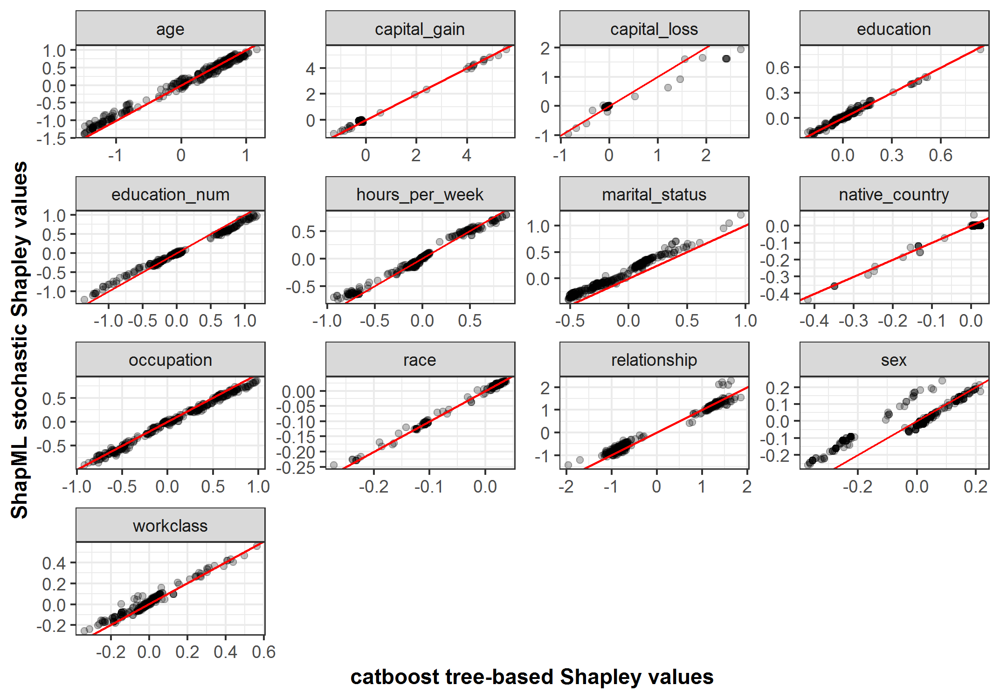

Purpose
The goal of this vignette is to demonstrate how, for the same boosted tree prediction model, the stochastic Shapley values from
ShapMLcorrelate with the non-stochastic, tree-based Shapley values from the Python shap package using the implementation discussed here.While
shapprovides the preferred Shapley value algorithm when modeling with boosted trees, this vignette demonstrates that the sampling-basedShapMLimplementation returns nearly identical results while having the ability to work with all classes of ML models.
Setup
Because the tree-based Shapley value algorithm is not currently available in
Julia, we’ll use catboost’sRpackage which provides a port of the tree-based algorithm inshapincatboost.get_feature_importance().Outline of the comparison:
R: Train the ML model.R: Calculate the tree-based Shapley values.R: Write thepredict()wrapper that works with the trained model.Julia: UsingRCall, convert the trained model andpredict()function intoJuliaobjects.Julia: Calculate the stochastic Shapley values, passing in the objects from step 4.R: Compare the results.
Comparison
Load Packages
R
- Allow
rmarkdownto passJuliaandRobjects between code blocks.
library(JuliaCall)
JuliaCall::julia_setup()
# Setting the Julia path first in the R environment points JuliaCall to the right Julia .dll files.
Sys.setenv(PATH = paste("C:/Users/nredell/AppData/Local/Julia-1.3.1/bin", Sys.getenv("PATH"), sep = ";"))
library(dplyr)
library(tidyr)
library(ggplot2)
library(shapFlex)
library(devtools)
if (!"catboost" %in% installed.packages()[, "Package"]) {
# Install catboost which is not available on CRAN (Windows link below).
devtools::install_url('https://github.com/catboost/catboost/releases/download/v0.20/catboost-R-Windows-0.20.tgz',
INSTALL_opts = c("--no-multiarch"))
}
library(catboost) # version 0.20Julia
using ShapML
using Random
using DataFrames
using RCallLoad Data in R
data("data_adult", package = "shapFlex")
data <- data_adult
outcome_name <- "income" # A binary outcome.
outcome_col <- which(names(data) == outcome_name)Train ML Model in R
- The accuracy of the model isn’t entirely important because we’re interested in comparing Shapley values across algorithms: stochastic in
Juliavs. tree-based inR.
cat_features <- which(unlist(Map(is.factor, data[, -outcome_col]))) - 1
data_pool <- catboost.load_pool(data = data[, -outcome_col],
label = as.vector(as.numeric(data[, outcome_col])) - 1,
cat_features = cat_features)
set.seed(224)
model_catboost <- catboost.train(data_pool, NULL,
params = list(loss_function = 'CrossEntropy',
iterations = 30, logging_level = "Silent"))Shapley Algorithms
- We’ll explain the same 300 instances with each algorithm.
Tree-based Shapley values in R
data_pool <- catboost.load_pool(data = data[1:300, -outcome_col],
label = as.vector(as.numeric(data[1:300, outcome_col])) - 1,
cat_features = cat_features)
data_shap_tree <- catboost.get_feature_importance(model_catboost, pool = data_pool,
type = "ShapValues")
data_shap_tree <- data.frame(data_shap_tree[, -ncol(data_shap_tree)]) # Remove the intercept column.
data_shap_tree$index <- 1:nrow(data_shap_tree)
data_shap_tree <- tidyr::gather(data_shap_tree, key = "feature_name",
value = "shap_effect_catboost", -index)Stochastic Shapley values in Julia
Predict function in R
- For
ShapML, the required user-defined prediction function takes 2 positional arguments and returns a 1-columnDataFrameof model predictions.
predict_function <- function(model, data) {
data_pool <- catboost.load_pool(data = data, cat_features = cat_features)
# Predictions and Shapley explanations will be in log-odds space.
data_pred <- data.frame("y_pred" = catboost.predict(model, data_pool))
return(data_pred)
}- In
Julia, convert the input data, the trained model, and thepredict()function intoJuliaobjects.
data = RCall.reval("data")
data = convert(DataFrame, data)
outcome_name = RCall.reval("outcome_name")
outcome_name = convert(String, outcome_name)
model_catboost = RCall.reval("model_catboost")
predict_function = RCall.reval("predict_function")
predict_function = convert(Function, predict_function)ShapML.shap
explain = copy(data[1:300, :]) # Compute Shapley feature-level predictions for all instances.
explain = select(explain, Not(Symbol(outcome_name))) # Remove the outcome column.
reference = copy(data) # An optional dataset for computing the intercept/baseline prediction.
reference = select(reference, Not(Symbol(outcome_name))) # Remove the outcome column.
Random.seed!(224)
data_shap = ShapML.shap(explain = explain,
reference = reference,
model = model_catboost,
predict_function = predict_function,
sample_size = 100 # Number of Monte Carlo samples.
)Results
- For 10 out of 13 model features, the correlation between the stochastic and tree-based Shapley values was >= .99 and above .92 for the remaining features.
data_shap <- JuliaCall::julia_eval("data_shap") # Pass from Julia to R.
data_shap$feature_value <- NULLdata_all <- dplyr::inner_join(data_shap, data_shap_tree, by = c("index", "feature_name"))data_cor <- data_all %>%
dplyr::group_by(feature_name) %>%
dplyr::summarise("cor_coef" = round(cor(shap_effect, shap_effect_catboost), 3))
data_cor## # A tibble: 13 x 2
## feature_name cor_coef
## <chr> <dbl>
## 1 age 0.994
## 2 capital_gain 0.997
## 3 capital_loss 0.983
## 4 education 0.991
## 5 education_num 0.998
## 6 hours_per_week 0.993
## 7 marital_status 0.99
## 8 native_country 0.99
## 9 occupation 0.996
## 10 race 0.998
## 11 relationship 0.991
## 12 sex 0.924
## 13 workclass 0.975p <- ggplot(data_all, aes(shap_effect_catboost, shap_effect))
p <- p + geom_point(alpha = .25)
p <- p + geom_abline(color = "red")
p <- p + facet_wrap(~ feature_name, scales = "free")
p <- p + theme_bw() + xlab("catboost tree-based Shapley values") + ylab("ShapML stochastic Shapley values") +
theme(axis.title = element_text(face = "bold"))
p